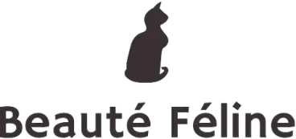
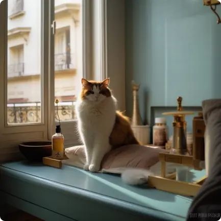

SITES PARTENAIRES

Un toilettage pour chat à domicile

Découvrez Karine, une toiletteuse pour chats passionnée et expérimentée. Après des années en tant que chef de projet dans l'industrie de la dermocosmétique, elle a décidé de suivre sa passion pour les animaux et s'est formée au toilettage des chiens et des chats. Grâce à sa compréhension des codes félins et à son expertise dans le démêlage des fourrures, Karine propose un service de toilettage personnalisé à votre domicile, offrant calme et sérénité à vos chats.
VISITERPour une prise en charge individualisée sur Paris